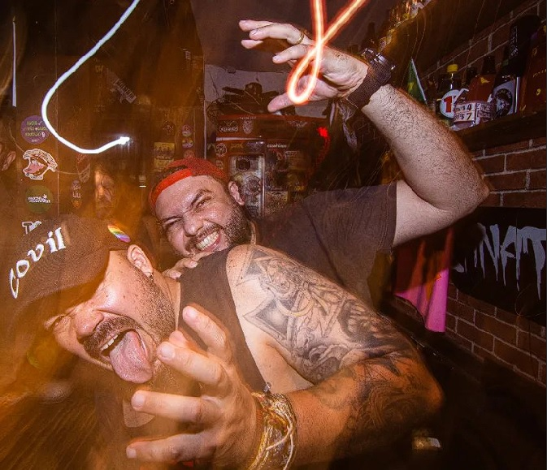
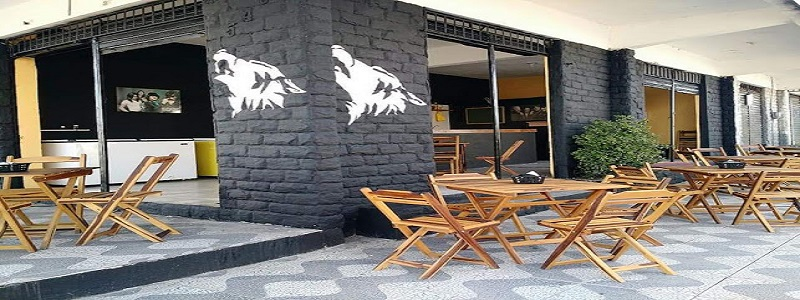

Sobre o Covil Rock'n Bar
Com uma cultura que foge dos bares padrões e normais. Os sócios Bifão e Marcelo, por dentro de toda cena undergroud da cidade, inauguraram o bar que ganhou o coração do headbenger mais trusão.
Localizada atualmente no coração da cidade, o Covil Rock'n Bar trouxe para o bairro mais boêmio, a essência do bar undergroud. Desde 2017, o Bar era localizado no antigo endereço que ficava no bairro Vila Pery, após a mudança para o bairro Benfica, conseguiu ser mais reconhecido e conquistar novos rockeiros do clássico ao extremo.
Nossa missão é objetivo: "embriagai vos até chamar o "ugo" ".🤮
#VemproCovil
Nossas redes sociais

As leis do bar
- Fiado só para maiores de 90 anos acompanhados pelos pais!
- Nunca maltrate um bêbado: leve-o para o bar mais próximo!
- É proibido encher o saco de quem está bebendo!
- Evite a ressaca, mantenha-se bêbado!